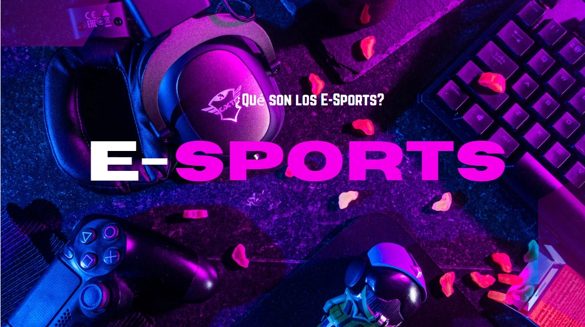
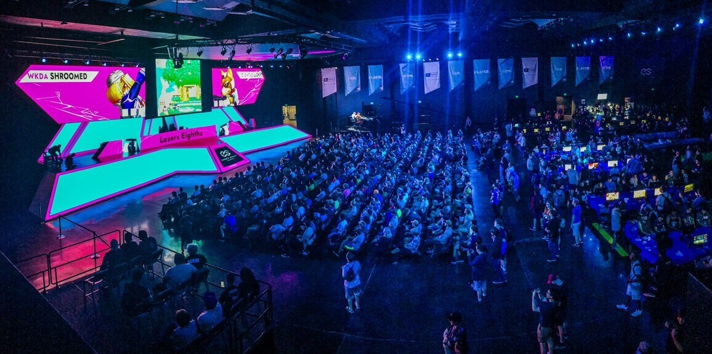
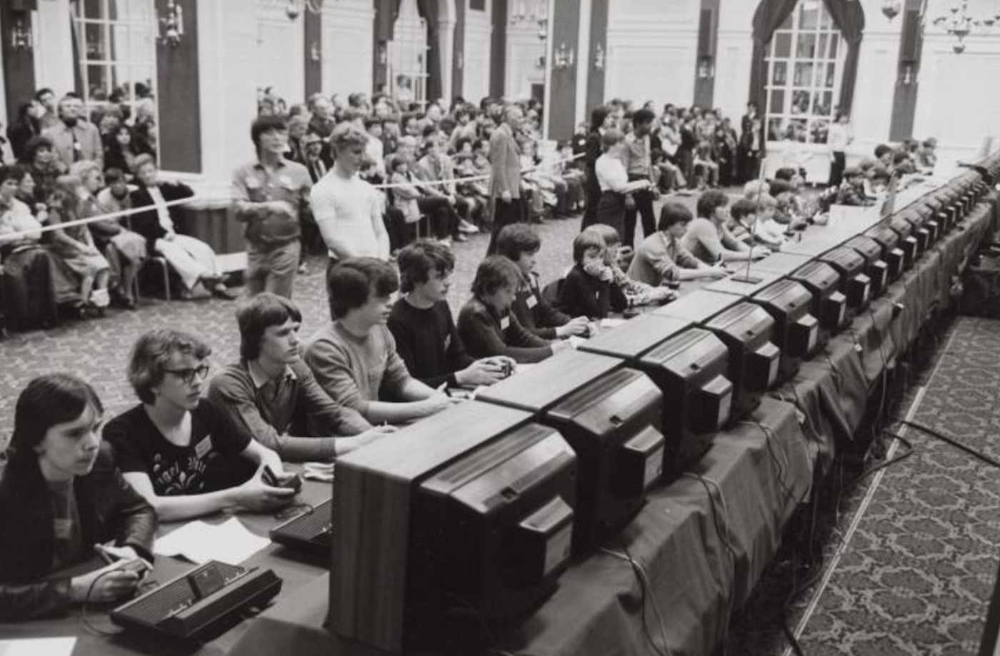
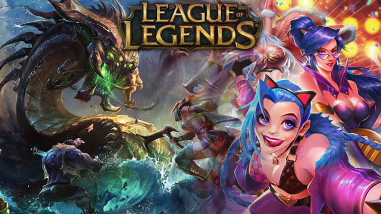
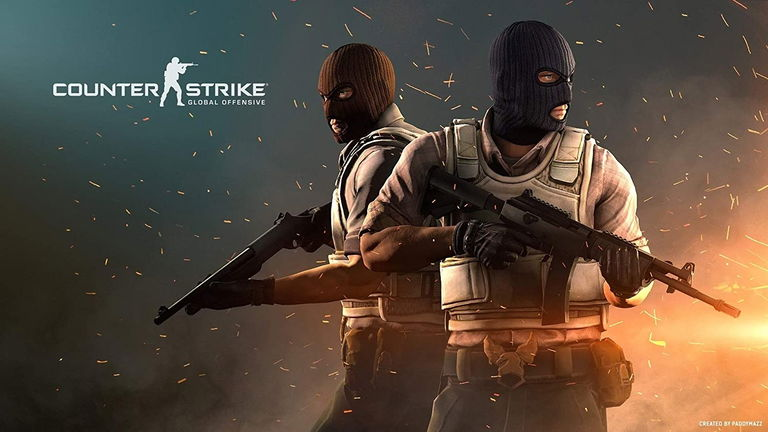
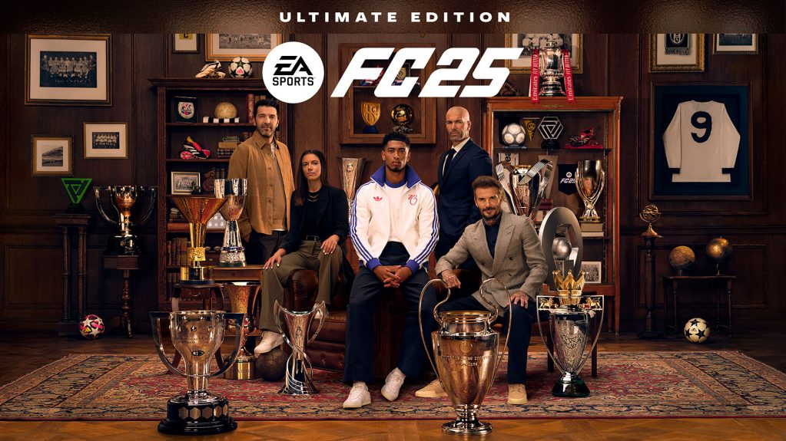

Dejanos encargarnos de explicarte qué son los E-Sports y encuentra la respuesta. Repasaremos
su historia, nacimiento, los juegos competitivos y torneos que se llevan a cabo.

A continuación encontrarás una tabla de contenido que te guiará a través de los principales momentos en la historia de los E-Sports.
Haz clic en cada sección para explorar su evolución.
Los E-Sports (o deportes electrónicos) son competiciones de videojuegos organizadas y multijugador, donde jugadores profesionales compiten en ligas y torneos para conseguir premios y reconocimiento internacional. Este fenómeno ha crecido exponencialmente hasta llenar estadios y atraer a millones de espectadores en línea, convirtiéndose en una industria global.
A diferencia de los videojuegos tradicionales, los E-Sports se centran en la habilidad, la estrategia y el trabajo en equipo, elementos clave en títulos como League of Legends (un MOBA de estrategia) y Counter-Strike 2 (un shooter táctico).
Los E-Sports no solo ofrecen premios millonarios, sino que también son el escenario donde los jugadores demuestran su habilidad para convertirse en leyendas, compitiendo en torneos masivos como el Worlds de League of Legends o The International de Dota 2.

La imagen muestra la energía y la escala de los E-Sports modernos. La foto captura el momento de una competición en vivo, donde un escenario profesional está iluminado con colores vibrantes y rodeado por una multitud de aficionados. El público, inmerso en la acción, observa las pantallas gigantes que transmiten el juego. Esta escena resalta la evolución de los E-Sports de ser un simple pasatiempo a convertirse en un espectáculo masivo que llena estadios y genera una atmósfera de emoción y comunidad, similar a los deportes tradicionales.
Historia de los E-Sports

Foto del primer Mundial de un torneo de E-Sports en videojuegos
Los E-Sports, tal como los conocemos hoy, tienen sus raíces en eventos de videojuegos que se remontan a varias décadas atrás. La imagen de abajo captura uno de los primeros hitos: la "Guerra Galáctica Intercolegial Spacewar!", celebrada en 1972 en la Universidad de Stanford. Con un gran premio de una suscripción a la revista Rolling Stone, este evento sentó un precedente para lo que hoy se ha convertido en una industria global multimillonaria.
A partir de ahí, la escena competitiva evolucionó con el surgimiento de los arcades y torneos locales, pero fue la llegada de internet y las redes de banda ancha a finales de los 90s y principios de los 2000s lo que permitió la masificación. Los juegos de PC como StarCraft y Quake se convirtieron en los cimientos de los deportes electrónicos modernos, sentando las bases para lo que hoy son fenómenos mundiales como League of Legends y Dota 2.
Juegos populares
League of Legends

Uno de los MOBA más grandes y con mayor influencia en la historia de los e-sports. Con torneos mundiales que atraen a millones de espectadores, LoL es sinónimo de estrategia y trabajo en equipo.
Counter-Strike 2

Un pilar de los shooters tácticos. Requiere una precisión extrema y una comunicación fluida. Sigue siendo uno de los juegos más competitivos y con una gran base de seguidores.
Valorant
Un shooter que combina la precisión de un FPS con habilidades únicas de personajes. Ha crecido rápidamente para convertirse en un líder en el género gracias a su jugabilidad dinámica.
Rocket League
Una fusión única entre el fútbol y las carreras de coches. Es un juego dinámico y fácil de entender para los espectadores, lo que lo convierte en un título ideal para torneos y una de las sorpresas más grandes de los e-sports.
Fc25

El simulador de fútbol más popular a nivel mundial. Con ligas y torneos oficiales, se ha convertido en una disciplina competitiva de primer nivel donde jugadores profesionales compiten por el prestigio de ser el mejor del mundo.
Torneos competitivos
Los torneos competitivos son el corazón de los E-Sports. Eventos masivos como Worlds de League of Legends o The International de Dota 2 llenan estadios y atraen a millones de espectadores en línea. Estos torneos no solo ofrecen premios millonarios, sino que también son el escenario donde los jugadores demuestran su habilidad para convertirse en leyendas